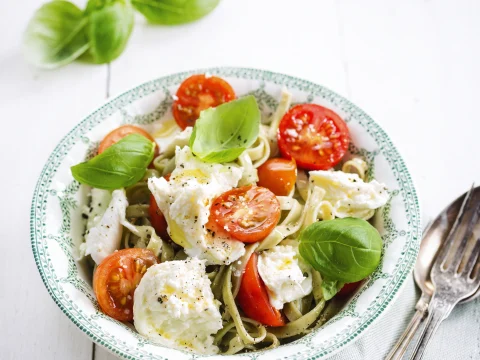

Pasta met kerstomaatjes

Ingredienten
- 300 g kerstomaten
- 400g tagliatelle(groene)
- 125g mozzerlla
- Basilicum
- olijfolie
- peper
- fleur de sel
Bereiding
- Spoel de kerstomaatjes en halveer ze.
- Kook de pasta volgens de aanwijzingen op de verpakking. Giet af.
- Pluk de mozzarella in stukjes, verdeel ze met de tomaatjes op de pasta.
- Werk af met basilicumblaadjes, olijfolie, versgemalen peper en een beetje fleur de sel.